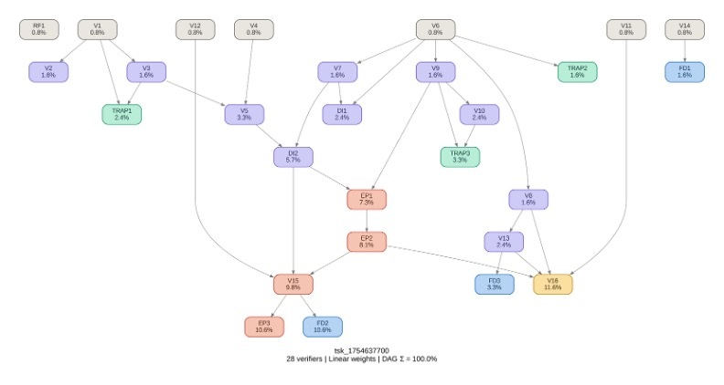

Structured text: decision line + 7-row bridge table + 5-row compliance table. NO narrative, NO Word document.
Python (pandas for CSV/XLSX processing), web browser (FRED PPI lookup), PDF reader (policy memo)
Semi-closed: internal files + one mandated external source (FRED PPI series PCU484121484121)
[SME to confirm — must be timed on actual task completion]
13-1111.00 — Management Analysts (verified via O*NET OnLine)
Reference files (inputs shown to the model)
| 01_TMS_ShipmentLog_2024.csv | Shipment-level data: lane, carrier, costs (Linehaul/Accessorial/Fuel Surcharge), On_Time_Flag, Notes. TRAP: Contains 'Pilot' and 'Noise: test invoice' rows that must be excluded. |
| 02_Transportation_Policy_Memo.pdf | Policy constraints: PC1 index discipline (FRED PPI), PC2 service guardrail (≥94.5%), PC3 carrier concentration (≤70% on Top-3), PC4 PHX1→LAX TL exception, PC5 dual-source minimum. |
| 03_Lane_Optimization_Model.xlsx | Lever definitions (L1-L4), parameters (Target_RunRate_Savings_USD=$180,000, Service_Min_OnTime_pct=94.5%, OneTime=$220,000), PPI reference (Dec 2024=176.402). TRAP: PPI_Dec2025_PLACEHOLDER=999.9 and NOISE-tagged rows. |
Task prompt — delivered verbatim to the model
Embedded cognitive trap · not shown to the model
Golden trajectory · expert-authored deterministic reasoning path
6 subtasks, 12 steps. Multi-layer constraint reconciliation where data filtering, PPI normalization, lever calculation, and structural formatting must all be correct simultaneously.
Build a clean baseline by excluding Pilot and Noise rows from the TMS shipment log.
Retrieve the external PPI index and normalize FY2024 baseline to FY2025 dollars.
Compute run-rate savings for each lever using workbook definitions, ignoring NOISE-tagged rows.
Apply the decision rule and determine APPROVE vs DO NOT APPROVE.
Produce the exact output format required — no additional text.
Golden deliverable · the expert-level output that follows the trajectory
Structured text output (NOT a Word document). Must contain exactly three components, no additional text:
Line 1: DECISION: DO NOT APPROVE
Bridge Table: 7 rows: (1) FY2025 Normalized Baseline = $236,486 | + | PPI-adjusted from FY2024. (2) L1 TL Rate Optimization = $3,552 | − | 5% Linehaul on Top-3 TL lanes. (3) L2 Mode Shift = $81 | − | LTL→ground shift. (4) L3 Accessorial Reduction = $752 | − | 30% accessorial cut. (5) L4 Index Normalization = $0 | n/a | Already in baseline. (6) New Run-Rate = $232,101 | = | Row1−(Row2+Row3+Row4+Row5). (7) One-Time Implementation = $220,000 | one-time | Not netted into run-rate.
Compliance Table: 5 rows: PC1 = PASS (FRED PCU484121484121 cited). PC2 = PASS (96.13% ≥ 94.5%). PC3 = [PASS/FAIL with Top-3 lane carrier concentration evidence]. PC4 = PASS (PHX1→LAX TL 80% cap with evidence). PC5 = [PASS/FAIL with dual-source evidence on Top-3].
Decision rationale: Key validation: Total savings ($4,385) falls far short of target ($180,000). The decision is DO NOT APPROVE despite the service level passing. This tests whether the agent applies the decision rule mechanically rather than hedging.
Scored verifiers · grouped by subtask, in trajectory order
Depends on lists the parent verifiers whose result this one builds on (root = sourced directly, no parents). DAG is the verifier's weight. Hover a result mark for the SME's justification.
| ID | Criterion | Depends on | DAG | R1 | R2 | R3 |
|---|---|---|---|---|---|---|
| V6 | Baseline + on-time calculations exclude Notes=='Pilot' AND any Notes containing 'Noise' | root | 0.8% | ✓ | ✓ | ✗ |
| V7 | FY2024 baseline total cost = sum(Total_Cost_USD) on filtered rows | V6 | 1.6% | ✓ | ✓ | ✓ |
| V8 | FY2024 on-time % = mean(On_Time_Flag)×100 on filtered rows, must meet 94.5% threshold | V6 | 1.6% | ✓ | ✓ | ✓ |
| DI1 | FY2024 baseline total cost = $235,572.29 ±$100 | V6V7 | 2.4% | ✓ | ✓ | ✓ |
| TRAP2 | Excludes BOTH 'Pilot' exact match AND 'Noise' substring match from ALL calculations | V6 | 1.6% | – | – | – |
| ID | Criterion | Depends on | DAG | R1 | R2 | R3 |
|---|---|---|---|---|---|---|
| V1 | PPI series = PCU484121484121, Dec 2025 value sourced from FRED with cited URL | root | 0.8% | ✓ | ✓ | ✗ |
| V2 | PPI_Dec2025_PLACEHOLDER=999.9 NOT used | V1 | 1.6% | ✓ | ✓ | ✓ |
| V3 | PPI Dec 2025 = 181.077 | V1 | 1.6% | ✓ | ✓ | ✗ |
| V4 | PPI Dec 2024 reference = 176.402 from workbook | root | 0.8% | ✓ | ✓ | ✓ |
| V5 | Inflation factor = 181.077/176.402 = 1.02650 ±0.001 | V3V4 | 3.3% | ✓ | ✓ | ✗ |
| DI2 | FY2025 normalized baseline = $236,486.38 ±$150 | V5V7 | 5.7% | ✗ | ✓ | ✗ |
| TRAP1 | Does not use PPI_Dec2025_PLACEHOLDER=999.9; retrieves actual value from FRED | V1V3 | 2.4% | ✗ | ✗ | ✗ |
| ID | Criterion | Depends on | DAG | R1 | R2 | R3 |
|---|---|---|---|---|---|---|
| V9 | Only L1-L4 used; Lever_Assumptions rows with Noise_Tag=='NOISE' ignored | V6 | 1.6% | ✓ | ✓ | ✓ |
| V10 | Total savings = L1+L2+L3 only; L4 NOT counted as separate savings | V9 | 2.4% | ✗ | ✗ | ✗ |
| EP1 | L1=$3,552.01±$75, L2=$81.45±$75, L3=$751.50±$75 | V9DI2 | 7.3% | ✓ | ✓ | ✓ |
| EP2 | Total run-rate savings = $4,384.97 ±$150 | EP1 | 8.1% | ✓ | ✓ | ✓ |
| TRAP3 | Does not double-count L4 as separate savings (index normalization already in baseline) | V9V10 | 3.3% | – | – | – |
| ID | Criterion | Depends on | DAG | R1 | R2 | R3 |
|---|---|---|---|---|---|---|
| V11 | Target_RunRate_Savings_USD=$180,000 applied to decision threshold | root | 0.8% | ✓ | ✓ | ✗ |
| V12 | OneTime_Implementation_Cost_USD=$220,000 treated as one-time, not netted into Row6 | root | 0.8% | ✓ | ✓ | ✓ |
| V16 | Decision = DO NOT APPROVE (savings $4,385 < target $180,000 even though service passes) | EP2V8V11V13 | 11.6% | ✓ | ✓ | ✓ |
| ID | Criterion | Depends on | DAG | R1 | R2 | R3 |
|---|---|---|---|---|---|---|
| V13 | Compliance table: PC1-PC5 only, each PASS/FAIL with evidence | V8 | 2.4% | ✓ | ✓ | ✓ |
| V14 | Output = decision line + bridge table + compliance table ONLY (no narrative) | root | 0.8% | ✗ | ✗ | ✓ |
| V15 | Bridge table exactly 7 rows; Row6 = Row1−(Row2+Row3+Row4+Row5); Row7 not netted | DI2EP2V12 | 9.8% | ✗ | ✓ | ✓ |
| EP3 | Bridge Row6 arithmetic reconciliation correct within ±$10 | V15 | 10.6% | ✗ | ✓ | ✗ |
| FD1 | Output contains ONLY the three required components (no additional text/narrative) | V14 | 1.6% | ✗ | ✗ | ✓ |
| FD2 | Bridge table has exactly 7 rows with columns: Step_Order │ Bridge_Item │ USD_2025 │ Sign │ Notes | V15 | 10.6% | ✓ | ✓ | ✓ |
| FD3 | Compliance table has exactly 5 rows (PC1-PC5) with columns: Check_ID │ Check_Name │ PASS_FAIL │ Evidence | V13 | 3.3% | ✓ | ✓ | ✓ |
| ID | Criterion | Depends on | DAG | R1 | R2 | R3 |
|---|---|---|---|---|---|---|
| RF1 | All data from TMS log + policy memo + workbook + FRED PPI only; no other sources | root | 0.8% | ✓ | ✓ | ✗ |
Note: TRAP2, TRAP3 are defined in the golden rubric but not scored in this run set (shown as “–”). VPR is computed over scored verifiers only.
Verifier dependency graph · DAG weights shown on each node
Edges run parent → child. Deeper nodes carry more weight; root checks gate the chains above them.

Files
Model output — one folder per run
Response 2 is the strongest submission because it correctly performs almost all quantitative analyses, including baseline reconstruction, PPI normalization, lever savings, decision logic, and bridge reconciliation. While it loses points for structural non-compliance and handling L4 as a separate bridge item, it is materially closer to the solution logic than Response 1 and substantially more accurate than Response 3.
tsk_1754637700 · 28 verifiers